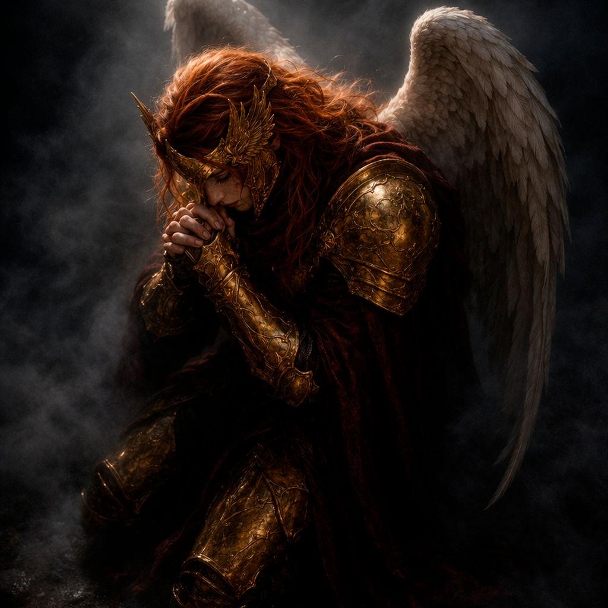
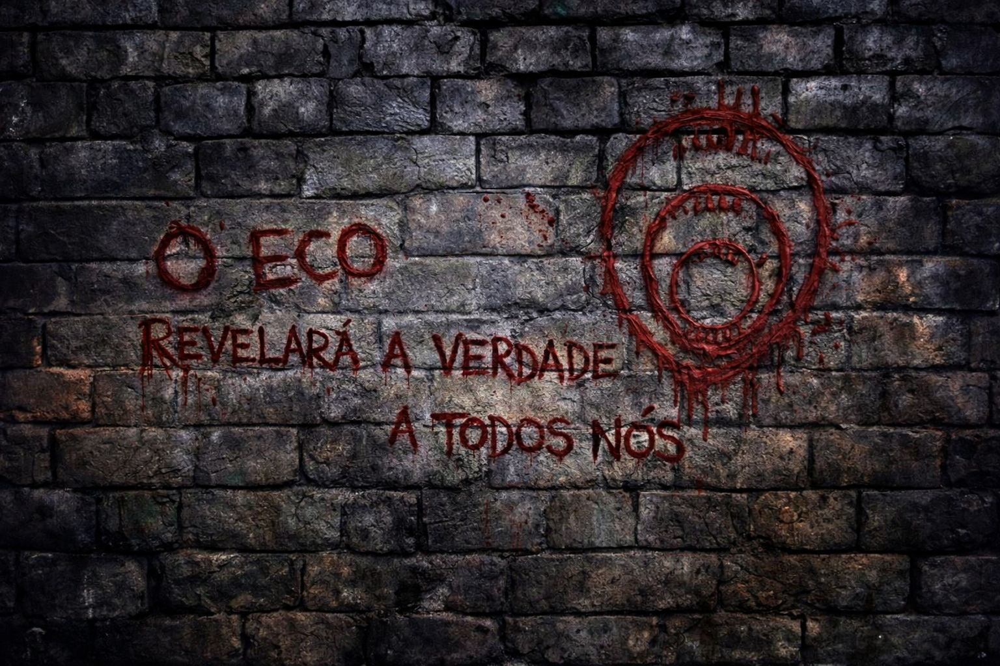
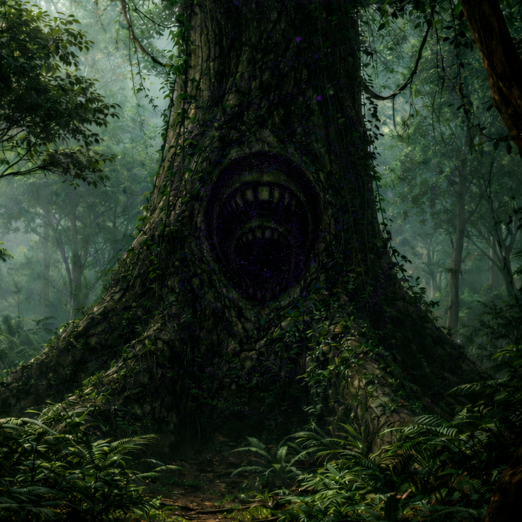

Raphael

A Reza
“Então é isso”
“Eu falei sozinho de novo”
“Disseram que tu escutava”
“Disseram um monte de coisa”
“Eu fiquei esperando”
“Achei que em algum momento ia fazer diferença”
“Eu não tô pedindo sinal”
“Nem perdão”
“Eu só queria saber se isso tudo não é loucura”
“Se eu não tô indo longe demais por alguém que talvez nem queira voltar”
“Mas se ainda existir qualquer coisa tua…”
“Mesmo que não seja tu…”
“Eu vou atravessar”
“Vou descer onde ninguém volta inteiro”
“E quando eu for”
“Protege meus rastros”
“Não por mim”
“Eu sou a última chance dele”
O Eco

Aya:
“Um texto no templo de Alberon chamava isso de alinhamento forçado com esse mesmo símbolo”
“Não era um ritual. Era uma… condição”

Templo de Alberon, na parede:
"O Eco revelará a verdade a todos nós"
Abaixo, num tomo antigo:
"Onde RABISCADO - ECO POR CIMA passou, não houve ruína imediata. Houve clareza excessiva. Homens deixaram de duvidar - e nisso selaram seu fim"

A Árvore Mãe
O símbolo não reage mais
Mas a sensação permanece
como se, por um instante,
tudo ali tivesse pensado junto…
e depois esquecido